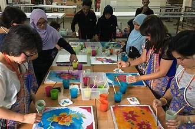

Celebrate Artistic Heritage
Traditional painting is more than just art—it's a storytelling medium that has been preserved for generations. In this workshop, you’ll explore:
- The origins and styles of traditional painting forms such as Madhubani, Warli, and Pattachitra.
- How to use natural dyes and brushes to replicate age-old techniques.
- Creating your own traditional art piece to take home.
Our expert instructors will guide you through the process, whether you're a beginner or an experienced artist. Join us to celebrate and preserve the beauty of traditional painting!
